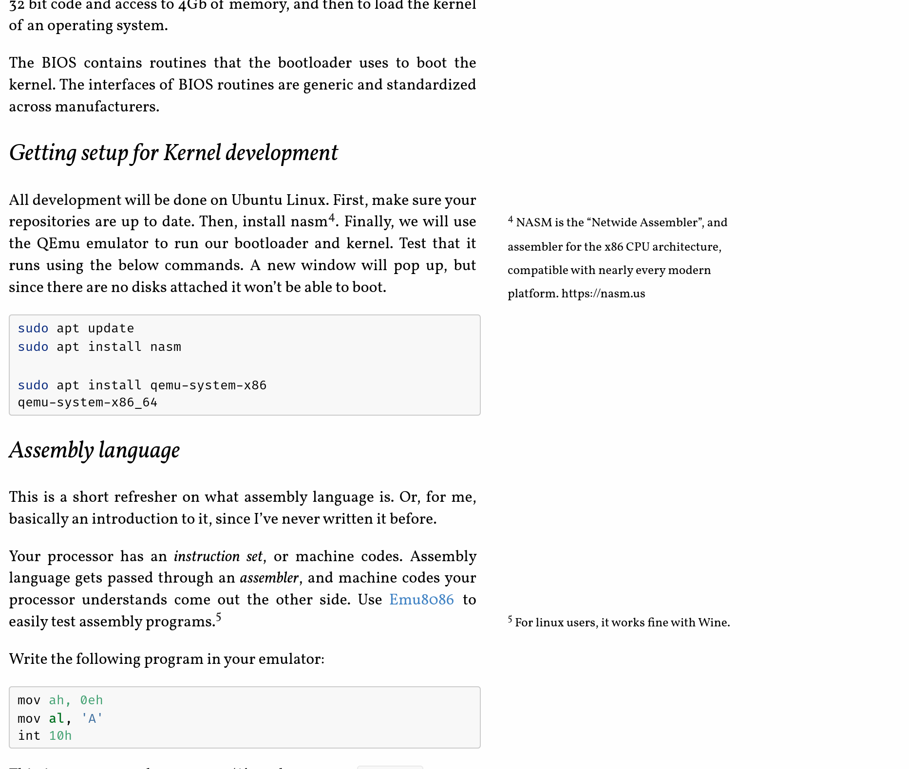
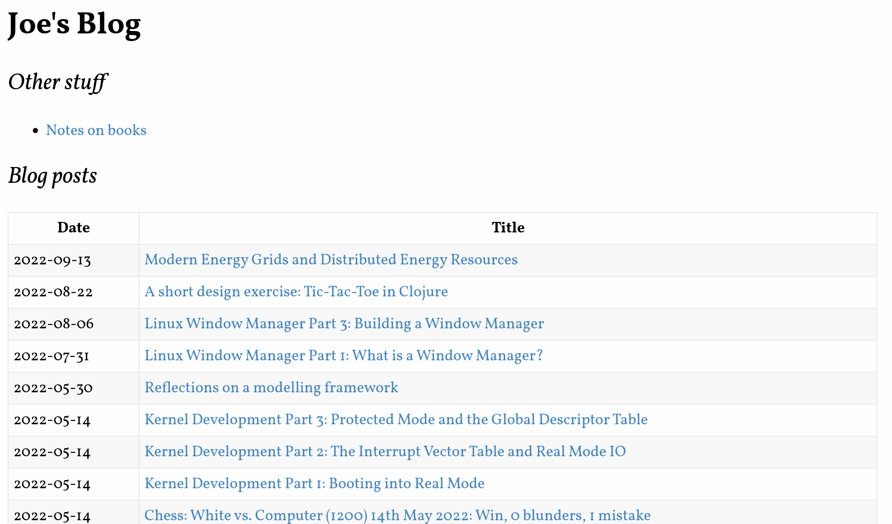

BlogPublish is a Clojure application for managing a simple blog. It takes markdown posts, puts them through pre-processing, replacing certain elements of markdown with HTML, shells out to pandoc to generate the full HTML file, then applies post-processing which re-writes the document tree. It also builds the index page for your blog. It does not handle hosting, comments etc. Aside from posts, the output blog also has a section for maintaining notes on books.1 1 Examples of Blog post  and blog index 
The sourcecode is here.
This is a Clojure project, and you will need the JVM and Clojure itself installed. See the Clojure Install Guide for installation details.
Once you have the repo cloned, and the prerequisites installed, you can build the uberJar with:
chmod +x build.sh
./build.shThis script simply runs Clojure build tool commands
clj -T:build clean, clj -T:build uber, both of
which call build commands in the build.clj file.
The output of the build is a java executable
blogformat-X.X.XX-standalone.jar. This can be copied to
your blog folder. css/style.css should also be copied to
your blog folder.
The folder format the program expects is as follows:
blog_root
|- css/style.css (the CSS file should be copied from this repo)
|- images (images referenced in posts)
|- markdown
| |- posts (where finished posts, in markdown format, live)
| |- books
|- html
| |- posts, books (where the program outputs html)
|- index.html, books.html
| (roots for posts and books respectively. Created by the program)
|- publish.jar (the program)Write a post in markdown/posts/YYYY-MM-DD_mypost.md
format2
2 The
date format is used in the index creation, but the name following the
first underscore isn’t important for functionality. .
When ready, run java -jar publish.jar from the command
line. This will create the html file in
html/posts/YYYY-MM-DD_mypost.html and create an index file with
a link to that file.
Now you can use a blog-hosting service, or roll your own. Github Pages is what I use, and it works fine.
The format of posts in the blog is inspired by the Tufte Format. I won’t go into the why’s of the format, but some of the notable characteristics of the format are:
The code has 3 namespaces:
A very simple namespace, it’s a regex match - in effect a partial markdown to html compiler. It finds footnote and footnote-references using regex, and replaces them with an html element.
(def reference #"\[\^(\d+)\](?!:)")
(def reference-html "<sup class=fnref><a id=\"note$1\" href=\"#fn$1\" title=\"Footnote $1\">$1</a></sup>")
(def footnote #"(?m)^\[\^(\d+)\]:(.*)$")
(def footnote-html
"<span id=fn$1 class=\"footnote\">
<a class=\"fnref\" href=\"#note$1\" title=\"Footnote $1 Reference\">$1</a>
$2
</span>")
(defn prewrite-markdown [text]
(-> text
(str/replace reference reference-html)
(str/replace footnote footnote-html)))
(comment
(str/replace "A footnote reference<sup class=fnref><a id="note1" href="#fn1" title="Footnote 1">1</a></sup>" reference reference-html)
;; => "A footnote reference<sup class=fnref><a id=\"note1\" href=\"#fn1\" title=\"Footnote 1\">1</a></sup>"
(str/replace "[^1]: this is a footnote" footnote footnote-html)
;; => "<span id=fn1 class=\"footnote\">
;; <a class=\"fnref\" href=\"#note1\" title=\"Footnote 1 Reference\">1</a>
;; this is a footnote
;; </span>"
)This namespace is rather more involved. Its purpose is to allow
transformations to be applied to html. The only current transformation
is inline-footnotes.
The public api of the namespace is rewrite, which
firstly serves the purpose of wrapping the conversion of html-string to
hiccup and back, and also allows additional transformations to be added
in the future.
(defn rewrite [html]
(-> html
html-prep
inline-footnotes
;; future transformations here
hc/html))The below is a sample (in hiccup format) of a “para-with-footnote-ref” - a data structure where the top level element is a para, and the para contains a footnote reference. Notice that the footnote (span.footnote) is not next to the thing that references it (sup.fnref) In our output document, we want the footnote to be horizontally situated in the right gutter of the page (which can be accompished with CSS) and vertically situated as closely as possible to the reference to it. To do this, we need to restructure the html, which is the purpose of this namespace.
(def sample
[:p {}
"Text"
[:sup {:class "fnref"} [:a {:id "note2", :href "#fn2", :title "Footnote 2"} "2"]]
"More text"
[:span {:id "fn2", :class "footnote"}
[:a {:class "fnref", :href "#note2", :title "Footnote 2 Reference"} "2"]
"Footnote text"]])
;; The main function of this ns, inline-footnotes, does this.
;; Note in the below evaluation how the span.footnote now follows immediately
;; after the sup.fnref. This will achieve the desired result.
(inline-footnotes sample)
;; =>
[:p
{}
"Text"
[:sup {:class "fnref"} [:a {:id "note2", :href "#fn2", :title "Footnote 2"} "2"]]
[:span
{:id "fn2", :class "footnote"}
[:a {:class "fnref", :href "#note2", :title "Footnote 2 Reference"} "2"]
"Footnote text"]
"More text"]Looking at the inline-footnotes function in detail:
(defn- inline-footnotes
"Given a hic-el containing footnotes, where the fnref
and footnotes are separated, will reorg the datastructure
such that the footnote immediately follows the fnref"
[hic]
(let [footnotes (into {} (get-footnotes hic))]
(vec (postwalk (fn [el]
(cond (para-with-footnote-ref? el)
(vec (restruct-fns el footnotes))
(standalone-footnote? el) nil
:else el))
hic))))We can see it is doing two things: 1. Getting all the footnotes from the document and putting them in a dictionary so they can be looked up. 2. Walking through the document again, identifying all the footnote references, inserting the footnote after the reference, and removing the original footnote.
Getting the footnotes is a simple recursive search through the tree:
(defn- get-footnotes [hic-el]
(cond (not (vector? hic-el)) [] ;; sentinel.
(footnote? hic-el) [[(footnote? hic-el) hic-el]]
:else (mapcat get-footnotes hic-el)))To rewrite the html itself:
(defn- restruct-fns [hic-el footnotes]
(mapcat #(replace-footnote % footnotes) (split-after footnote-ref? hic-el)))
(defn- replace-footnote [hic-el footnotes]
(let [x (footnote-ref? (last hic-el))]
(if x (conj (vec (remove footnote? hic-el)) (get footnotes x))
(vec (remove footnote? hic-el)))))restruct-fns splits the hiccup sequence (expected to be
a paragraph containing a footnote) after it encounters a footnote
reference. It then calls replace-footnote on the
sub-sequences, adding the actual footnote (from the lookup dictionary)
onto the end. Otherwise it just element - though in both branches, it
removes any actual footnotes it finds, preventing duplication.
The main function of the program looks like this
(defn -main []
(println "Publishing markdown Posts")
(publish! publish-markdown preproc-markdown postproc-markdown (:markdown post-paths) (:html post-paths))
(println "Publishing markdown Books")
(publish! publish-markdown preproc-markdown postproc-markdown (:markdown book-paths) (:html book-paths))
(println "Creating Post index")
(create-post-index!)
(println "Creating Book Index")
(create-book-index!)
(println "DONE")
(shutdown-agents))There are two things happening here: publishing all the posts, and creating the index.
The function here is publish!:
(defn publish! [pub-fn pre-fn post-fn in-folder out-folder]
(->> (get-file-paths in-folder)
(map pre-fn)
(map pub-fn)
(map post-fn)
(map #(move-file % out-folder))
(map cleanup)
doall))It takes three functions: publish, a pre-processor and a post-processor, as well as the input folder and output folder.
It gets all the files in the input folder, applies successively the pre-proc, publication and post-proc, moves all the files, and cleans up any temporary files.
Each of the pre, pub and post functions have side-effects, reading a file and outputting another file, and each one returns the name of the file it has written to to be used by the next function. For example:
(defn preproc-markdown [file-path]
(let [out-file-path (str/replace file-path ".md" ".temp")]
(spit out-file-path (md/prewrite-markdown (slurp file-path)))
out-file-path))Creating the index:
(defn create-post-index! []
(->> (get-file-paths (:html post-paths))
(map #(entry-from-post post-paths %))
build-index
html
(spit index)))The steps are:
index.html[:html
;; snip
[:body
[:div
;;snip
[:table
[:tr [:th "Date"] [:th "Title"]]
(for [entry (reverse (sort-by :date entries))]
[:tr
[:td (:date entry)]
[:td [:a {:href (str (:html post-paths) (:filename entry))}
(:title entry)]]])]]]]I like the deterministic nature of the overall process. It effectively recreates the entire blog every time you run the program, rather than trying to figure out what changed and run only those. Trying to do that would’ve required adding some state management, maybe a database, as well as figuring out when something should be published. Having the whole thing created from scratch avoids all that complexity. This might run into some performance problems if the blog gets really large, but I don’t foresee that being an issue.
I like the footnote post-processor overall. Some nice treewalking stuff in there.
It’s pretty extensible. For this write-up (which is part of a blog that I use this software for) I needed to add the ability to publish ‘portfolio’ posts like this one. The only things I needed to add (apart from a bit of config) were a couple of trivial functions, basically copy-pasted.
I’m not happy with how removal of footnotes is done. The program
takes two swipes at it: in replace-foonote and
inline-footnotes. This is a consequence of the ‘standalone’
footnote, where a footnote sits in its own para rather then being nested
under another one. This case was added afterwards, hence why the same
thing is done in two places. This should be harmonized.
I don’t love how publish! works. Firstly it operates at
the ‘folder’ level, pointed at a folder and touching everything in that
folder, where it should really work at a file level. Second,
ideally the process would be
mdfile->mdstring->htmlstring->htmlfile, with the
IO happening only at the start and end. Because I’m shelling out the
actual compiliation of MD to HTML I have to have each step do its own
IO. The trade-off, obviously, is that I don’t have to write my own
markdown compiler. This is a good tradeoff I think. I might be able to
do something to eliminate the ‘temp’ file and just have the pandoc
output write to std-out and have the program pick it up from there. But
that doesn’t solve the problem really.
The way the get-title works is wrong. Given an html
file, it should be able to figure out what the title is. Instead it has
to find the related markdown file and get the title from that,
which obviously presumes you have the markdown file available.